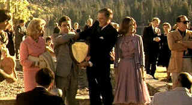

| Godfather
Part II (SE)/A,A- |
| Paramount/1974/200/ANA 1.85 |
Two scant years after the release of The Godfather, writer/director
Francis Ford Coppola returns to the dark world in arguably the greatest sequel achievement ever
accomplished on film. After a brief moment depicting Michael Corleone's confirmation as head the of
the Corleone crime family, The Godfather Part II shifts on a mournful tone to a funeral in
Sicily. The strong yellow cast of the first film is embellished by the sun and dust. The old world
is recorded in a few short strokes. This is the world into which Vito Corleone was born. A
world of feuds, vengeance, feudal fealty, and calculated protection against enemies. The first
scenes trace Vito's escape from Sicily and his arrival in the new world. As the young Veto ponders
his future through the windows of his quarantine quarters on Ellis Island, the film dissolves to
the first communion of his grandson some 57 years later. It Lake Tahoe, Nevada, the new base of the
Corleone family and another celebration. The bifurcated back and forth structure of The
Godfather Part II introduced and maintained in miraculous balance through the more than three
hours of the film. But the behind the scenes manipulations and interesting cross-cutting are
established as well, respecting the structure of the first film.
 |
| A new Godfather. © Paramount |
This time out the Corleone family has put most of their marbles into
developing the money machine of Nevada casinos. Michael deals expeditiously with uncooperative
politicians. There's dissatisfaction within the crime family structure as the Corleone's have moved
operations from New York. Frankie Pentangeli wants to eliminate the Rosato Brothers, moving in on
Corleone operations in New York. A senate committee has begun investigating allegations of the
existence of the Mafia and in particular the Corleone crime family. Michael picks up an acrid scent
of treachery close to home. In a move to spread his empire to Cuban casinos, Corleone forms an
alliance with big shot criminal mastermind Hyman Roth. Along with Fredo, he attends a meeting in
Cuba, where events do not unfold as planned. The pressures of running the Corleone Family has
sapped what little humanity Michael maintained. His wife Kay has grown to distrust and dislike
him.
The parallel story of Veto Corleone's rise, though laced with
blood, is warm. Veto acts out of a sense of necessity to protect his family. His rise is chronicled
in through a filter of respect and distance. The production design details make The Godfather
Part II sing. Turn of the century New York rings true. The Ellis Island immigration experience
is captured in short bold strokes. The Lake Tahoe compound is a wonderful find and Cuba is
recreated with extraordinary force.
Puzo and Coppola deliver a top notch script liberally relying on Godfather
conventions to link the films effortlessly. Coppola's direction is outstanding. Actors are given
enough space to breath life into their characters. Big production elements like the casino
sequences are recreated with the magic of the moment. The rhythms of the film play
beautifully. The Coppola team of director of photography Gordon Willis, composers Nino Rota and
Carmine Coppola and production designer Dean Tavoularis work in perfect harmony with the director.
Three editors worked feverishly with Coppola to put The Godfather Part II together in its
final elegant presentation.
Once again, supporting characters are richly drawn. Significantly absent
is Clemenza, who has died in New York. The addition of Clemenza under boss Frankie Pentangeli makes
up for the absence of the former. Michael's strong arm Al Neri is more of a white collar killer
than any of the characters in the first film, again making The Godfather Part II's move into
more legitimate enterprise chilling. Add a corrupt Senator and savvy old mob figure named Roth and
some additional juice for Fredo, and the contemporary segment creates a rich tapestry. The period
part of the film features a young Clemenza, an excellent character, and a local dandy Black Hand
figure Fannuci.
Al Pacino and Robert DeNiro are the twin lynchpins on which the duality of
The Godfather Part II balances perfectly. Pacino's performance as Michael Corleone makes you
feel you're watching a man who sleeps in a refrigerated room. There's no room for warmth in this
man, whether dealing with his personal family or the family business. Pacino is thoroughly
consistent in his portrayal. Playing Veto Corleone during his rise to power as a Mafia chieftain,
DeNiro captures the essence created by Brando as Corleone in the first film. DeNiro's Corleone is
tough, thoughtful, and decisive to act. The mannerisms of the young Veto are consistent with
audience expectations. Again in top form are Robert Duval as Tom Hagen and John Cazale as Fredo.
Diane Keaton's role as Kay is beefed up a bit and she's fine. Outstanding cast additions include
Michael V Gazzo as Pentangeli and Bruno Kirby as the young Clemenza. G. D. Spradlin has some fine
moments as Senator Geary and veteran acting teacher Lee Strasberg is calmly sinister as Roth.
Presented on 2 DVDs, the second feature in the Godfather
collection is slightly cleaner overall than the first film. Images are very sharp with background
information easily discernible. Color palette remains true to the first film and the transfer again
recreates the amazing lighting designed by cinematographer Gordon Willis. Shadow detail is likewise
slightly improved, though this may be attributable to Willis's original photography which is less
underexposed this time around. Interiors are warm and filled with shadows, yet the players in
this Godfather incarnation are slightly more out front and exposed to the light. Grain is
tightly controlled. The Cuban sequences (Filmed in Dominican Republic.) are especially lovely. You
can feel the heat in the colors of Willis's lensing. Black is deep, plush velvet smooth,.
Fleshtones are very accurate. Dolby Digital Surround is more aggressive in Godfather Part II.
The Cuban sequences are especially effective.
A detail revealed by Francis Ford Coppola in the audio commentary sat like
a piece of old meat between my teeth. The director takes credit for the dubious notion of naming American
movies with the unoriginal Part II, et. al. following the original title. A pox on Roman numerals
in movie titles! Otherwise, once again Coppola is in fine fettle on the commentary track. With a total of nine hours of commentary over three films it is natural that
Coppola repeats himself here and there.
|
|
|
|

A Star is Born/A,B

Judy Garland is brilliant in the great Hollywood tale of one star on the rise and another
sliding into the abyss. James Mason is wonderful alongside Judy.

Tucker: The Man and His Dream is beautifully filmed with
loving attention to detail.

The
Movie Poster Archive includes extensive poster images from the films of stars like Susan Hayward,
Kirk Douglas, Katharine Hepburn and many more. Our featured star is William Holden.
 
The American Widescreen Museum, is the ultimate resource for widescreen movie information, Martin
Hart's reliable site is a great tool for movie buffs.

Comprehensive DVD review database. Easy to use
interface with specific region searches.

The home of Francis Ford Coppola's Zoetrope
Studios has more corridors of interest than you might expect.
 A huge selection of French movie posters
with images galore. Don't miss this site if you ate interested in lovely French posters. A huge selection of French movie posters
with images galore. Don't miss this site if you ate interested in lovely French posters.
 Have you visited Home Theater
Talk lately? One of the friendliest places on the Net for Home Theater and DVD discussion, you
can get help for installation problems or simply share your opinions with other Vidiots. Have you visited Home Theater
Talk lately? One of the friendliest places on the Net for Home Theater and DVD discussion, you
can get help for installation problems or simply share your opinions with other Vidiots.

Apocalypse Now is Coppola's distorted vision of war now on DVD in
gorgeous anamorphic images.

Selections from the Feature Archive include articles on
Akira Kurosawa, Blonde Bimbos,
Frank
Darabont, Steven Culp,
John
Herzfeld or Vietnam: The
Hollywood Pariah, and many more....
Director Walks the Wire
Balanced by an armor of movie lore and filmmaking daring, director John Herzfeld is comfortable
walking the high wire. Check out this interview by Stu Kobak.

With the introduction of the Columbia Super Bit collection it looks
like a new wave of repackaging marketing might be just around the corner.
New Edition: Bit by Bit

Click on the DVD MIA symbol for
profiles of DVDs missing in action.
Add films to the DVD MIA Master List by filling out
a simple form. Click Here
|